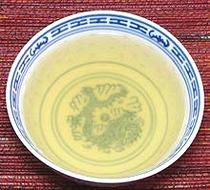
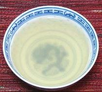
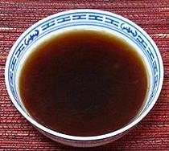
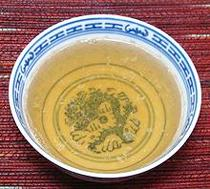

|

Soy Sprout Mushroom |

Szechwan Vegetable |

Fermented Black Bean |

Soy Sauce Sesame Oil |
|
4 3 12 2-1/2 |
oz oz qt |
Dried Shiitakes Bamboo Shoots Soybean Sprouts Water |
|
|
2 1-1/4 |
oz qt |
Szechuan Vegetable Water |
|
|
2 1-1/4 |
oz qt |
Fermented Black Beans Water |
|
|
1 3 1/2 |
qt t t |
Water Soy Sauce Sesame Oil, dark |
|